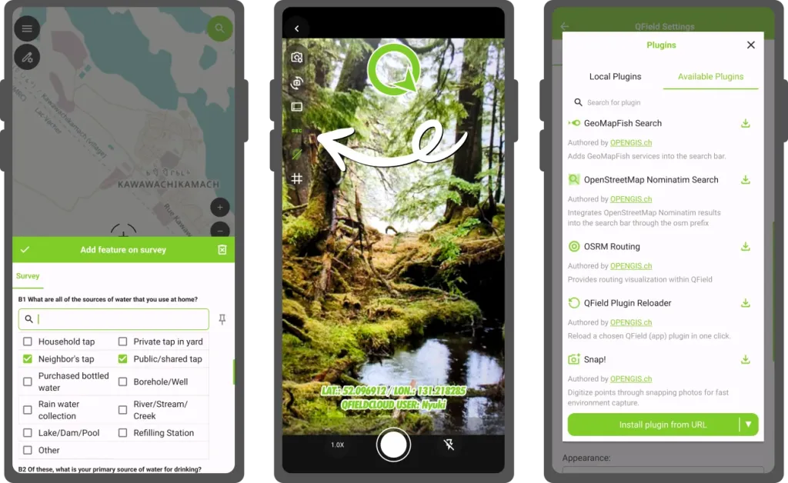
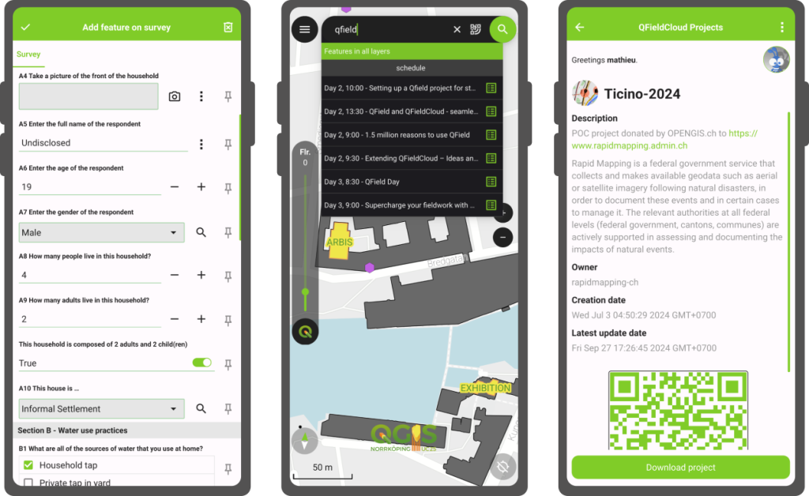
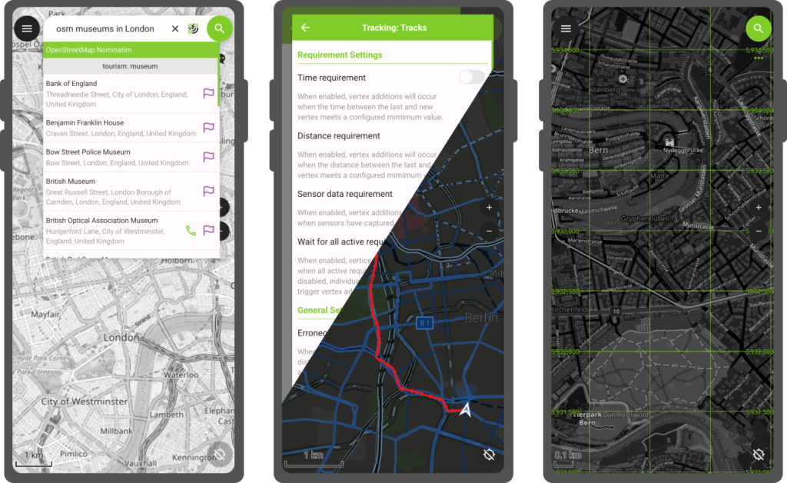
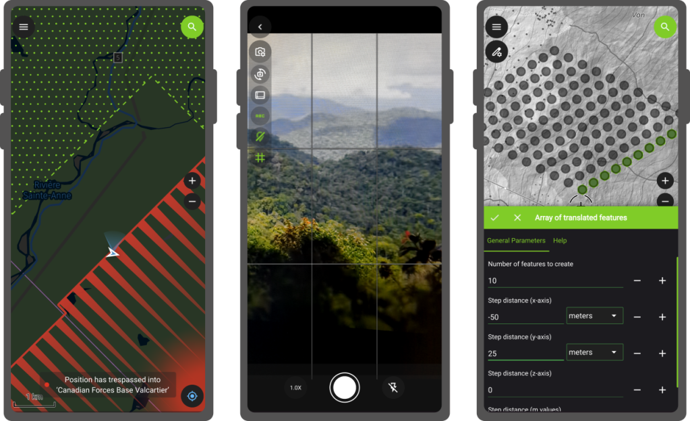
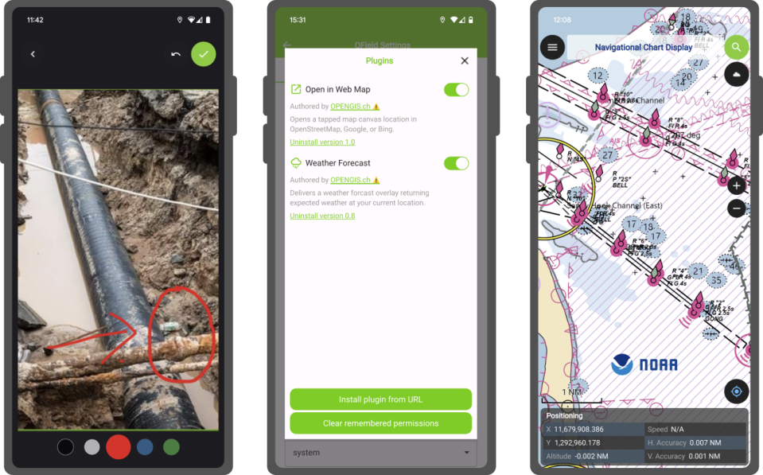
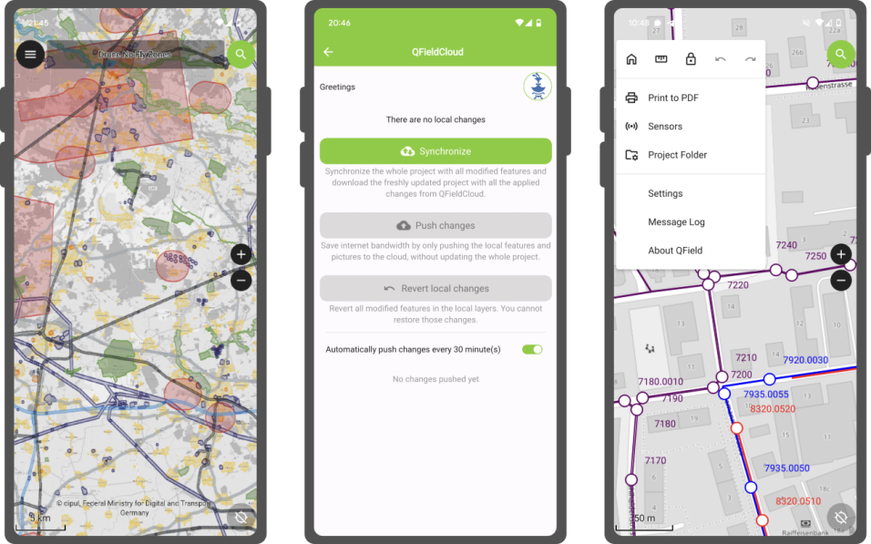

Whatever your field — forests, cities, heritage sites, disaster zones — QField helps you collect and manage the data that really counts. Fast, reliable, multilingual and open-source, QField brings the power of QGIS wherever your work takes you.
🗺️ High precision location, tracking, geofencing, and full QGIS symbology, just like on desktop.
📋 Create rich survey forms with constraints, logic, defaults, and validations — all in QGIS.
📸 Photos, videos, audio, QR code scanning, and NFC — fully integrated.
✏️ Snap, reshape, freehand draw, edit vertices, and run field-based geometry operations.
🧩 Extend QField with custom QML/JavaScript tools and workflows.
☁️ Sync projects and data in real time with QFieldCloud and work with GeoPackages, KML, GPX, georeferenced PDFs, and more.
QField 3.7 brings image stamping customization allowing for in-app branding of images. Plugins continue to evolve with a repository to ease installation.

Other highlights include: fine grained layer permission system and vector tile identification.
QField 3.6 is released with a focus on feature form polishing to coincide with the release of the XLSForm Converter. Map canvas preview makes UX panning around much nicer.

Other highlights include: map layer notes, feature identification on WMS/ArcMapService.
QField 3.5 unlocks a long awaited user feature: the ability to track their position while their phone is locked!

Other highlights include: “forward” angle snapping, grid decorator, and WebDAV imports.
QField 3.4 makes its way into the public providing access to QGIS’ processing toolbox algorithms while in the field as well as geofencing!

Other highlights include: project variable editing, and a better in-app camera.
QField 3.3 launches a new chapter with plugin framework and adds a long-sought feature: image sketching.

Other highlights include: transfer of feature attributes and copy to clipboard, image decoration overlay, refinement to the side dashboard legend.
QField 3.2 provides users and managers the ability to define tracking sessions within their project files.

Other highlights include: undo/redo mechanism.
In the last year, tons of efforts spent on improving the documentation site (https://docs.qfield.org/) as well as making the growing amount of content accessible within QField itself.
☁️ Centralized project, data and settings management.
🤝 Collaboration - users, organizations, teams.
✏️ Data versioning.
🧑💻 API integrations.
We implemented a new file storage backend, that was yet to be the largest single change of QFieldCloud ever.
New users and veterans will be able to create projects on the fly via a simple wizard.
Newly-created projects as well as pre-existing ones can be converted to cloud projects in QField itself.
The addition of a new pie menu and positiong jumping with infinity grid as well as button leaning on the main screen makes for a friendlier interface with key features such as tracking sessions easier to discover.
Other enhancements include WMS legend, tons of QFieldCloud polishing, copy/pasting of features across layers, and project localization.
Plugin authors will also benefit from the addition of several key APIs allowing for vector layer creation as well as layer injection into projects.